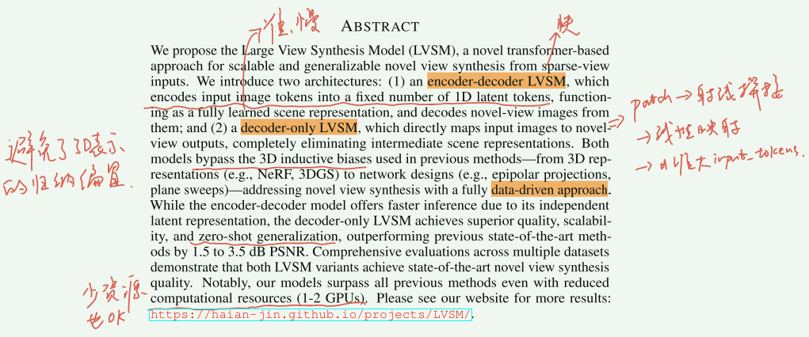
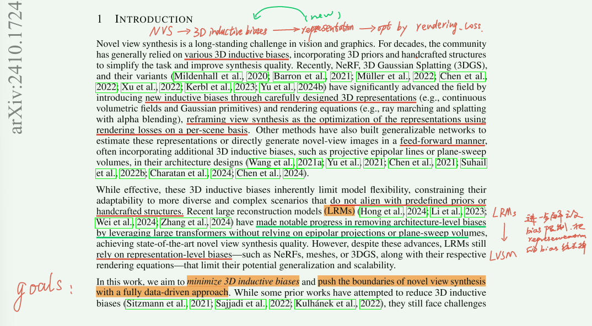
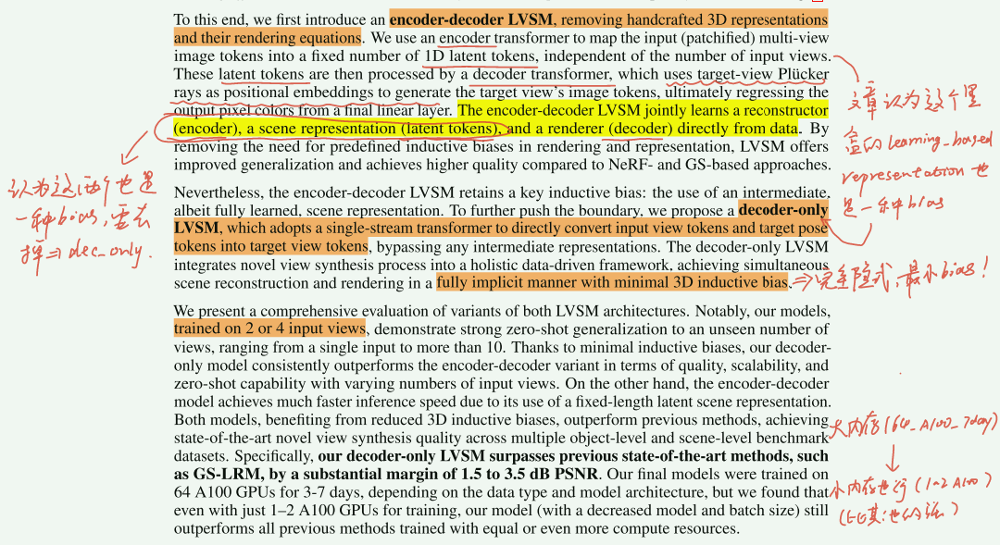
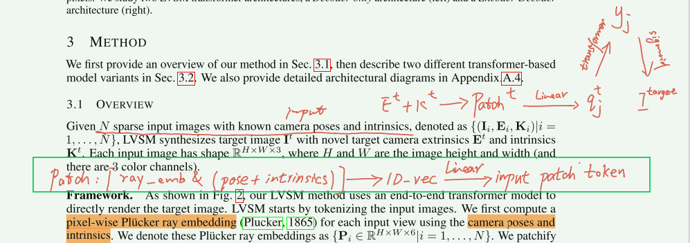
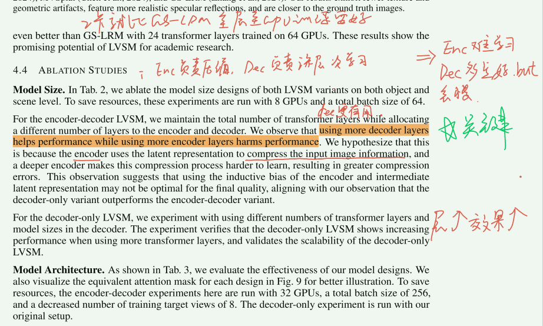
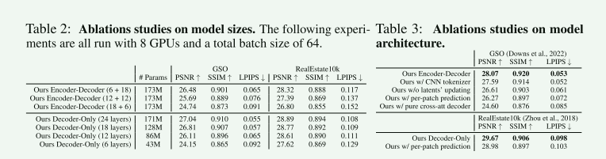

- [[#LVSM: A LARGE VIEW SYNTHESIS MODEL WITH MINIMAL 3D INDUCTIVE BIAS]]
- [[#Pipeline]]
- [[#1. Introduction]]
- [[#2. Method]]
- [[#3. Experiments]]
Pipeline
1. Introduction



2. Method

3. Experiments

不同的enc-dec 和 dec-only 配置下的表现，以及消融实验结果：